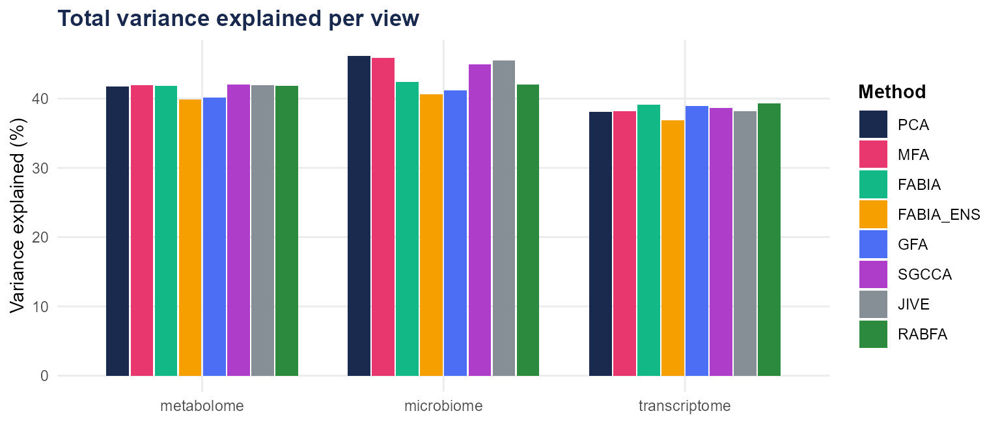

library(factomics)
sim <- simulate_multiomics(n_samples = 60, seed = 1)All methods are called the same way, through
run_factor_pipeline(X, methods, k). Method-specific
settings are ordinary arguments with a method prefix
(fabia_*, fabia_ens_*, mofa_*,
gfa_*, pca_*, sgcca_*,
jive_*, rabfa_*).
knitr::kable(list_factor_methods()[, c("method", "package", "family",
"description")])| method | package | family | description |
|---|---|---|---|
| PCA | stats | Matrix factorisation | Block-weighted PCA on concatenated views |
| MFA | FactoMineR | Matrix factorisation | Multiple Factor Analysis (Escofier & Pages) |
| FABIA | fabia | Bayesian / biclustering | Factor Analysis for Bicluster Acquisition |
| FABIA_ENS | fabia | Ensemble / biclustering | Ensemble FABIA: robust biclusters over many runs (Kasim 2016, Ch. 10) |
| GFA | GFA | Bayesian | Group Factor Analysis (Bayesian, view-specific sparsity) |
| MOFA | MOFA2 | Bayesian | Multi-Omics Factor Analysis v2 (needs Python mofapy2) |
| SGCCA | mixOmics | Correlation-based | Sparse Generalised Canonical Correlation Analysis |
| JIVE | r.jive | Matrix factorisation | Joint and Individual Variation Explained |
| RABFA | factomics | Bayesian / graph-guided | Graph-guided Bayesian FA with robust adaptive shrinkage (Zhang 2024) |
Preprocessing shared by all methods
By default (scale_features = TRUE) every feature is
z-scored, so all features start on the same footing, and zero-variance
features are set to zero. Samples are aligned across views by name. If
your data are already normalised the way you want, use
scale_features = FALSE.
PCA: block-weighted, concatenated
The simplest integrative baseline: the views are stacked and a single
PCA is run. With pca_block_weight = TRUE (default) each
view is divided by the square root of its number of features, so a view
with 10,000 genes does not swamp a view with 50 metabolites. It needs
nothing beyond base R.
res_pca <- run_factor_pipeline(sim$data, methods = "PCA", k = 4,
verbose = FALSE)
round(res_pca$PCA$meta$variance_percent, 1)
#> [1] 16.6 13.9 8.8 2.7MFA: Multiple Factor Analysis
MFA (FactoMineR) weights each view by its first eigenvalue, then runs
a global PCA. It is fast, deterministic and a strong default. It needs
at least two views. mfa_group_sizes can override the
grouping of columns.
FABIA
FABIA is a sparse, biclustering-oriented factor model: each factor is
driven by a small set of features and a subset of samples.
fabia_alpha controls loading sparseness (larger = sparser),
fabia_cyc the number of iterations.
res_fabia <- run_factor_pipeline(sim$data, methods = "FABIA", k = 4,
fabia_alpha = 0.05, fabia_cyc = 500,
verbose = FALSE)Because FABIA starts from random values, its biclusters can change
from run to run. Ensemble FABIA
("FABIA_ENS") runs it many times and keeps only the
biclusters found in most runs; see FABIA
versus ensemble FABIA.
res_ens <- run_factor_pipeline(sim$data, methods = "FABIA_ENS", k = 4,
fabia_ens_control = list(runs = 20),
verbose = FALSE)
res_ens$FABIA_ENS$meta$reliability
#> F1 F2 F3
#> 1 1 1GFA: Group Factor Analysis
GFA is a Bayesian factor model with view-wise sparsity: each factor
can be active in all views, in some, or in only one.
gfa_iter_burnin and gfa_iter_max control the
Gibbs sampler. More iterations give more stable factors.
MOFA2
MOFA2 is a Bayesian framework for multi-omics factor analysis that
handles missing values and different likelihoods. It runs in Python
(mofapy2) via reticulate. Either install
mofapy2 and tell factomics where that Python is:
run_factor_pipeline(sim$data, methods = "MOFA", k = 4,
mofa_python = "/usr/bin/python3")or let MOFA2 build its own Python environment with
mofa_use_basilisk = TRUE. The Docker image has everything
set up already. mofa_convergence ("fast",
"medium", "slow") trades speed for
precision.
res_mofa <- run_factor_pipeline(sim$data, methods = "MOFA", k = 4,
mofa_convergence = "fast", verbose = FALSE)
res_mofa$MOFA$plots$variance_by_factorSGCCA: sparse generalised CCA
SGCCA (mixOmics) finds components that maximise the covariance
between views, one component per view and dimension; factomics reports
their average as the sample score. By default all features are kept;
sgcca_keep gives the number of features to keep per view
and component, for sparse, more interpretable loadings.
res_sgcca <- run_factor_pipeline(sim$data, methods = "SGCCA", k = 3,
sgcca_keep = c(30, 15, 10), verbose = FALSE)
colSums(res_sgcca$SGCCA$loadings != 0)
#> F1 F2 F3
#> 55 55 55JIVE
JIVE splits each view into a joint part shared by
all views (rank k), an individual part
specific to the view (rank jive_rank_individual) and noise.
factomics reports the factors of the joint part; the individual parts
are kept in meta$individual.
res_jive <- run_factor_pipeline(sim$data, methods = "JIVE", k = 3,
jive_rank_individual = 1, verbose = FALSE)RABFA: graph-guided Bayesian factor analysis
RABFA (Zhang, Chang, Shen and Long, 2024, Biometrics) is a Bayesian factor model that uses prior knowledge of which features act together, typically a pathway graph such as KEGG, to guide which loadings are shrunk to zero:
- every loading has its own Laplace shrinkage parameter, so strong signals are shrunk little and noise a lot (adaptive shrinkage);
- the log shrinkage parameters of features that are connected in the graph are correlated through a sparse precision matrix that is itself learnt from the data, so connected features tend to be selected together, while edges that disagree with the data are down-weighted (robust to wrong edges).
factomics implements the Gaussian version of the model with a Gibbs sampler (Metropolis-Hastings for the shrinkage parameters, block Gibbs for the graph precision matrix), written from the published model.
The graph is a data frame of edges with columns from and
to, an adjacency matrix, or one adjacency matrix per view.
Feature names may be plain (TP53) or view-prefixed
(rna::TP53); edges between different views are ignored, as
in the paper. Here we build the graph that the simulation actually used,
by connecting the features loaded on the same true factor:
W <- sim$truth$W
pathways <- do.call(rbind, lapply(names(W), function(v)
do.call(rbind, lapply(seq_len(ncol(W[[v]])), function(f) {
on <- rownames(W[[v]])[W[[v]][, f] != 0]
data.frame(from = on[1], to = on[-1], view = v) # star-shaped pathway
}))))
edges <- data.frame(from = paste0(pathways$view, "::", pathways$from),
to = paste0(pathways$view, "::", pathways$to))
head(edges, 3)
#> from to
#> 1 transcriptome::gene_001 transcriptome::gene_002
#> 2 transcriptome::gene_001 transcriptome::gene_015
#> 3 transcriptome::gene_001 transcriptome::gene_035
res_rabfa <- run_factor_pipeline(sim$data, methods = "RABFA", k = 4,
rabfa_graph = edges,
rabfa_iter = 1500, rabfa_burnin = 750,
verbose = FALSE)
res_rabfa$RABFA$meta$n_edges
#> [1] 181The result has the usual scores and
loadings (posterior means) and, in meta, the
loadings whose 95% credible interval excludes zero, the posterior
shrinkage parameters, a BIC-type criterion, and the log-likelihood trace
for checking convergence:
m <- res_rabfa$RABFA$meta
colSums(m$selected)
#> F1 F2 F3 F4
#> 66 62 62 0
plot(m$loglik_trace, type = "l", xlab = "Iteration", ylab = "Log-likelihood",
main = "RABFA trace (burn-in = first half)")How well do the selected loadings match the true signal features?
truth <- sim$truth$feature_labels[rownames(m$selected)]
table(selected = rowSums(m$selected) > 0, true_signal = truth)
#> true_signal
#> selected 0 1
#> FALSE 163 7
#> TRUE 4 156Without pathway knowledge, build_feature_graph() gives a
data-driven graph (features in the same view with high correlation), and
rabfa() is a shortcut:
g <- build_feature_graph(sim$data, cutoff = 0.5, max_neighbors = 5)
fit <- rabfa(sim$data, k = 4, graph = g, iter = 5000, burnin = 2500)The main tuning parameters (rabfa_control()) are
nu1 (overall shrinkage; larger is sparser) and
nu2 (how adaptive each loading’s shrinkage is); the paper
chose them, and k, by grid search on the BIC stored in
meta$bic. eta = 10 and eps = 0.2
follow the paper. MCMC needs enough iterations: the paper used
5,000-10,000; check loglik_trace has flattened after
burn-in.
Running many methods together
If a method fails (missing package, too few views, numerical problem)
it is skipped with a warning and the others are still returned. Use
stop_on_error = TRUE to make failures fatal instead.
res_all <- run_factor_pipeline(
sim$data, methods = c("PCA", "MFA", "FABIA", "FABIA_ENS", "GFA", "SGCCA",
"JIVE", "RABFA"),
k = 4, rabfa_graph = edges, rabfa_iter = 1000, rabfa_burnin = 500,
verbose = FALSE)
res_all
#> <factomics_results>
#> 60 samples, 3 view(s): transcriptome (200), metabolome (80), microbiome (50)
#> PCA 4 factors
#> MFA 4 factors
#> FABIA 4 factors
#> FABIA_ENS 3 factors
#> GFA 4 factors
#> SGCCA 4 factors
#> JIVE 4 factors
#> RABFA 4 factors
plot_variance_explained(res_all, type = "total")
Choosing the number of factors
There is no single right k. A practical approach is to
fit a generous k, look at
plot_variance_explained(), and keep the factors that
explain a noticeable share of variance in at least one view, or that
associate with covariates of interest
(plot_factor_associations()).